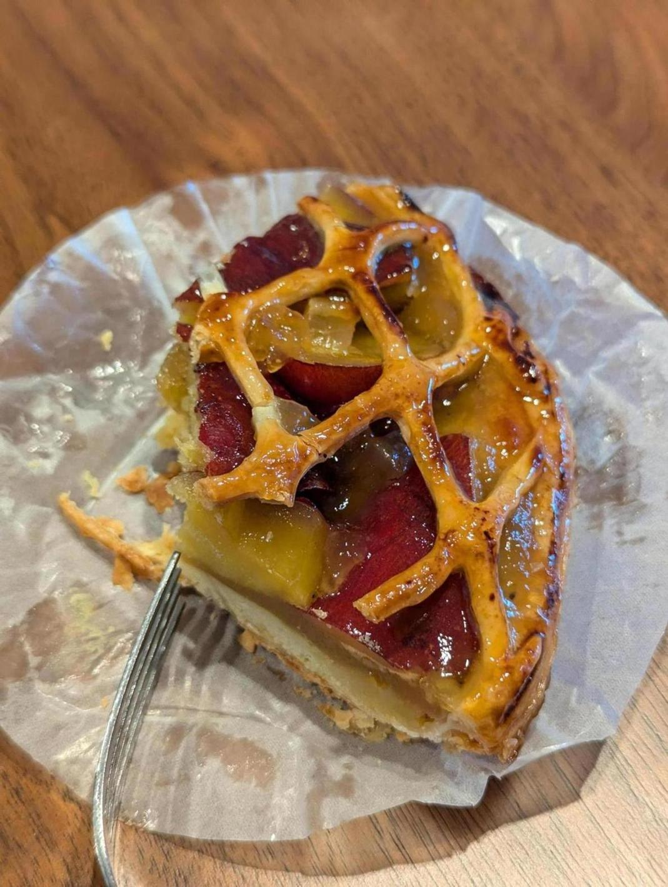

さつまいものアップルパイ。私はアップルパイが好きだ。アップルパイはあまり人気がないが、実はポテンシャルが高い。
となりのヤングジャンプというWebサイトで、ワンパンマンが全話無料で読めることを知った！これで銭湯でわざわざ読む必要はなくなった。 なので早速今日から読み始め、先程全話読み終わった。247話あったようだ。
ワンパンマンはギャグバトル漫画という感じで、笑えるシーンが多いながらバトル漫画としての王道がふんだんに盛り込まれている印象。サイタマは強くなりすぎているという設定だが、単にそれがギャグではなく今後彼自身が成長・変化しそうな感じがあって良い。普通強すぎるキャラクターはそいつだけ戦わせればいいじゃんみたいな空気になってしまいがちだが、ワンパンマンはあらゆる壮大な戦闘シーンがサイタマが出てくるまでの前振りとして機能しており、サイタマがいざ戦い始めたときのカタルシスがすごい。そこを楽しむ漫画だと思う。 後はやっぱりキングがいいな。キングの今後は楽しみだ。
あと、なんか絵が異常に上手い気がする。書き込まれた絵と雑な絵の使い分けが絶妙だし、人の動きもわかりやすい。
私は大抵の漫画を1冊ちょうど10分くらいで読み終えることができる。ワンパンマンは31巻出ており、310分で読み終わる予定だったが、ワンパンマンもほぼその時間で読み切ることができた。